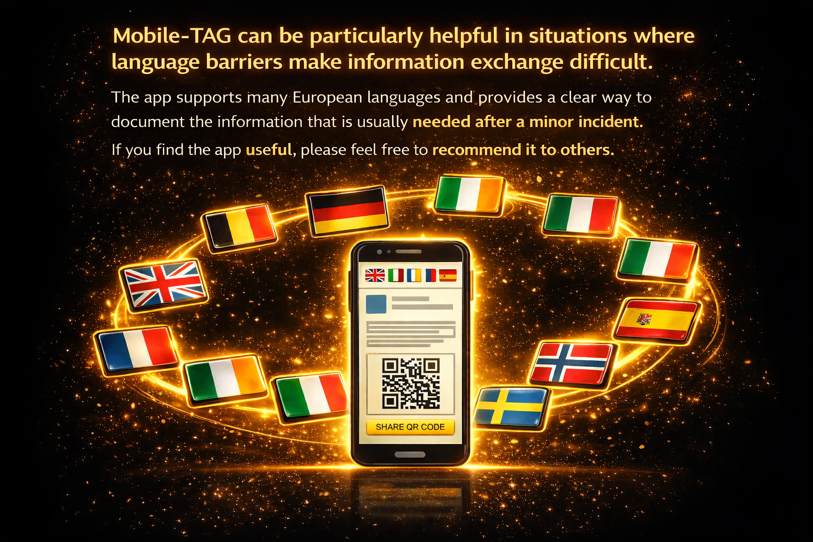
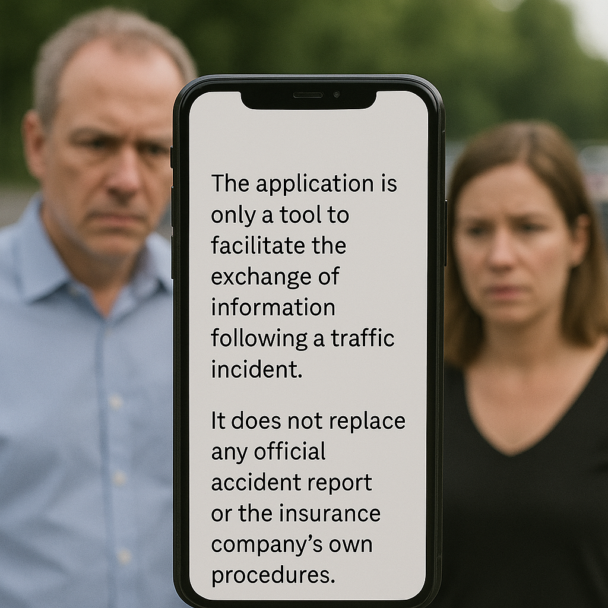
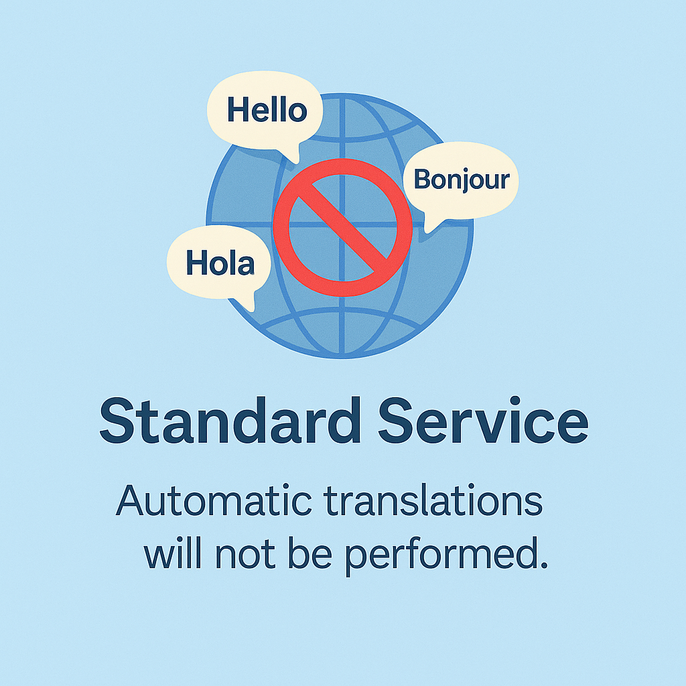
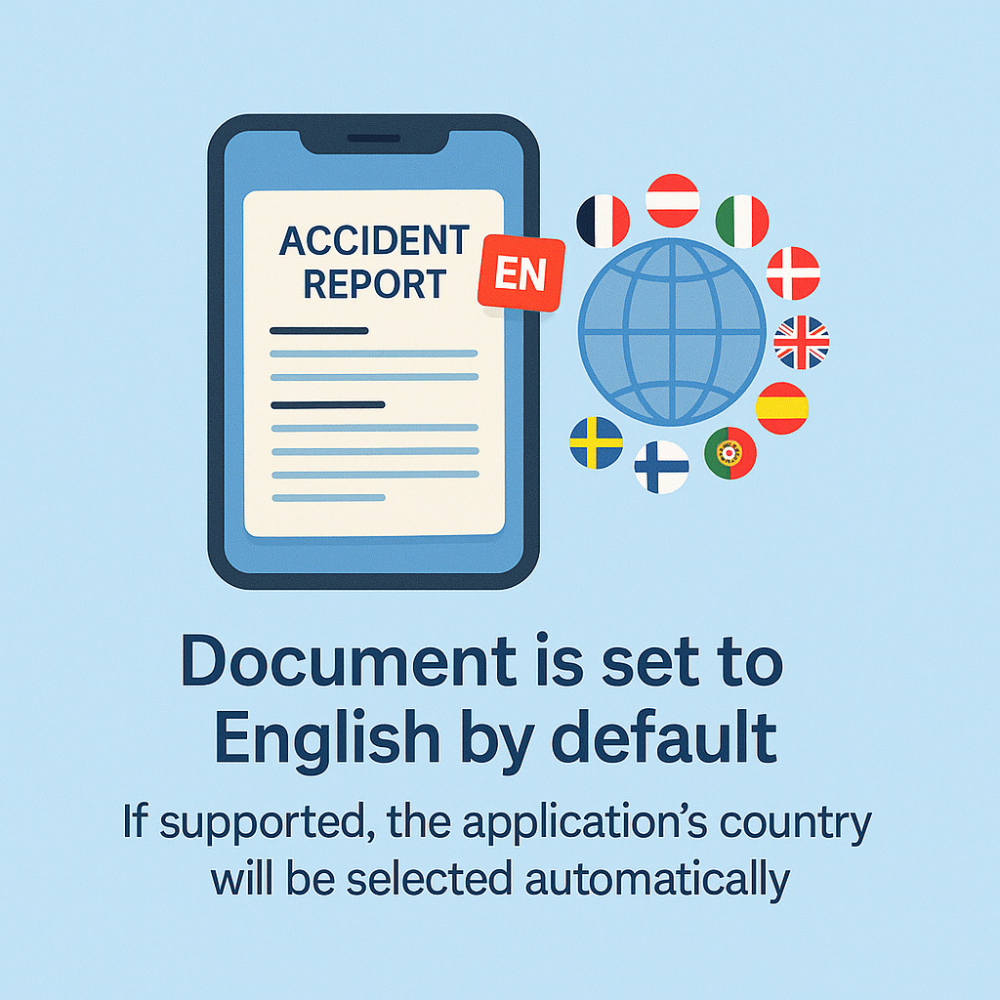
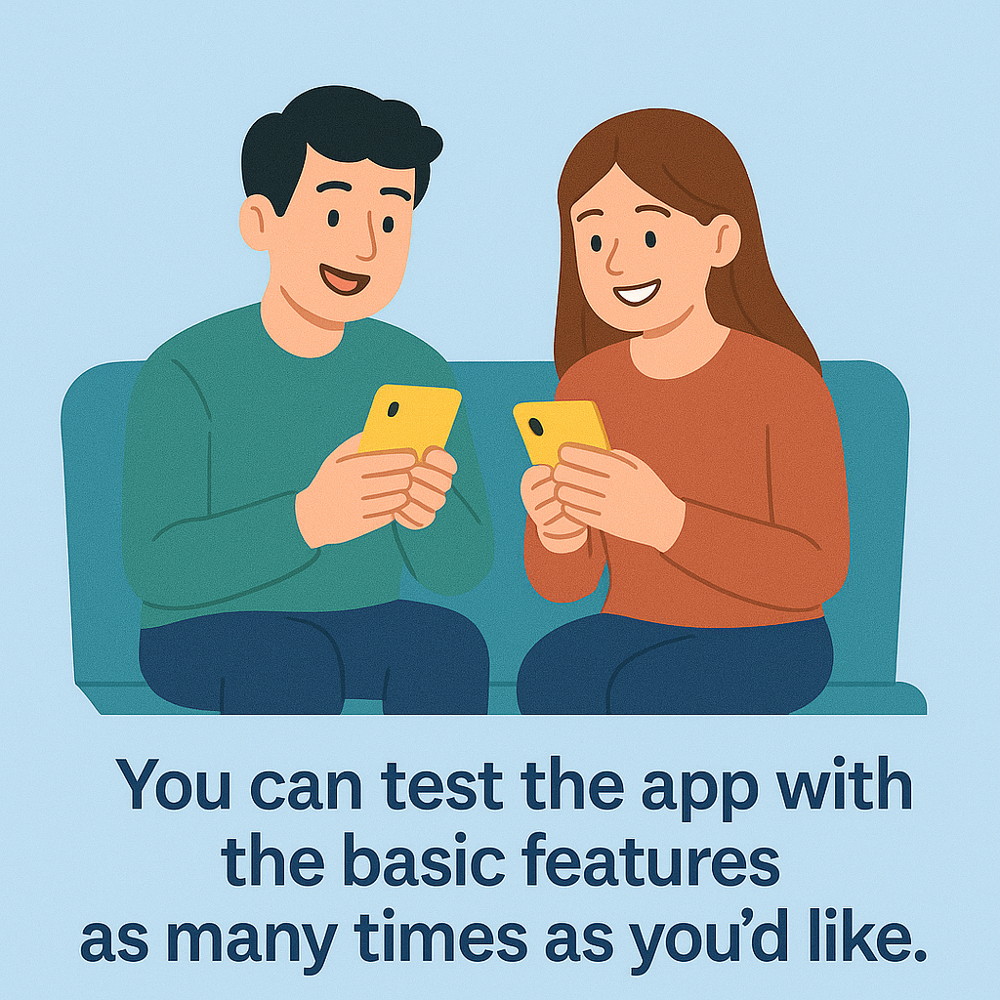

Mobile-TAG is especially useful in situations where language differences make communication difficult. The app supports many languages and helps drivers organize incident information in a clear and simple way. Mobile-TAG is designed as a practical note-taking tool for drivers.
Imagine drivers from different countries being involved in a minor traffic incident. Language differences can make documentation difficult. With Mobile-TAG, each driver can enter information in their own language, while the document is prepared in the appropriate language associated with the vehicle. The original text is always preserved for clarity.

Mobile-TAG is a tool designed to help drivers exchange and organize information after a traffic-related incident. It does not replace official reports or any procedures required by authorities or insurance companies.
The document created by Mobile-TAG does not represent an admission of fault or liability. Its purpose is to summarize factual information as entered by the user about the incident.
Mobile-TAG helps drivers collect and organize important information quickly after a traffic incident, even when language barriers exist. The generated document can be shared as a reference when communicating with other parties. The app does not replace existing procedures and is intended as a supportive tool.
Mobile-TAG has been developed to support drivers in situations where language differences or stress make documentation more difficult.

When the standard service is used, automatic translation of user-entered text is not applied.
By helping drivers document minor incidents more efficiently, Mobile-TAG can contribute to clearer communication at the scene. This may help reduce unnecessary delays in simple situations.

The document is created in English by default. If the vehicle’s country of registration is supported, the app may select the corresponding language automatically.
Reports created with Mobile-TAG are protected with a password to help reduce the risk of unintended access. The password is based on information provided by the user and is intended for convenience rather than strong security.

If you want to explore how Mobile-TAG works, you can test the app without entering any contact details for third parties. This allows you to familiarize yourself with the features before using the app in a real situation.
About the application
Being involved in a traffic incident is often a stressful experience. Confusion, frustration, and uncertainty are common, and many drivers simply want the situation to be over as quickly as possible. At the same time, important details need to be noted — something that becomes more difficult when no paper is available or when the drivers do not share a common language.
In such situations, contacting an insurance company immediately is not always practical. Phone lines may be busy, online services may require logins, and help may not be available during evenings or weekends. This can add to the stress at an already difficult moment.
Mobile-TAG is designed to help drivers organize and record incident information directly on their mobile device. Within a few minutes, drivers can summarize what happened in a clear and structured way, allowing them to leave the scene calmly and review or share the information later when needed.
The app does not replace official reports, insurance systems, or required procedures. Instead, it acts as a supportive note-taking tool that helps drivers capture factual details during an incident — clearly, calmly, and without language barriers.
Design Principles Behind Mobile-TAG
Privacy-first design
Mobile-TAG is built around a privacy-first architecture. All accident documentation is stored locally on the user's device. No accounts, cloud storage, or central databases are required. Drivers maintain full control over their information and can delete it at any time.
When two drivers exchange information using QR synchronization, contact details for witnesses or passengers are not shared between devices. This is done to reduce the risk of misuse or harassment and because a driver cannot give consent on behalf of other individuals. When a single device is used to document the incident, all entered contact information remains within that document.
Designed for real-world situations
Traffic incidents often occur in stressful environments. Mobile-TAG guides drivers step-by-step through the documentation process, allowing photos, sketches, and descriptions to be combined automatically into a structured accident report.
Multilingual accident documentation
Drivers involved in an incident may not speak the same language. Mobile-TAG supports more than 50 languages and can automatically generate structured documentation that each driver can understand.
Clear scope and responsible design
Mobile-TAG is intended for minor vehicle incidents without injuries. It does not replace emergency services or official police reports. The goal is to help drivers summarize the situation clearly before contacting insurance providers.
Independent accident documentation
Mobile-TAG works regardless of insurance provider, vehicle ownership, or national login systems. This allows drivers to document the situation quickly before contacting insurance companies later.